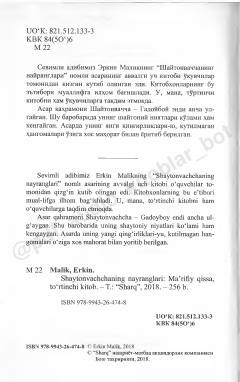

SNShaytonvachcha Gadoyboyning yangi sarguzashtlari va shaytoniy nayranglari haqidagi qiziqarli qissa.
Ushbu asar mashhur yozuvchi Erkin Malikning Shaytonvachcha haqidagi turkum asarlarining to'rtinchi kitobidir. Unda bosh qahramon Gadoyboyning ulg'ayishi va uning yangi shaytoniy nayranglari hamda kutilmagan sarguzashtlari qiziqarli tarzda tasvirlangan.